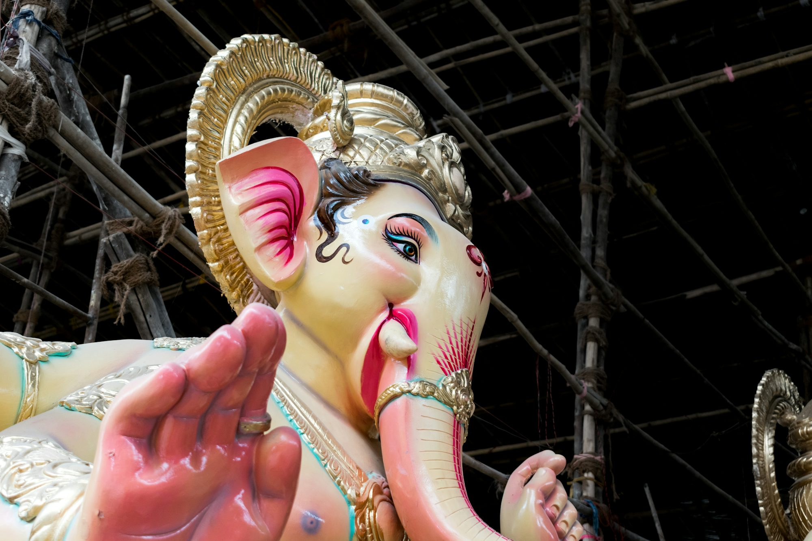

A Celebration of Flavor: The World of Food Festivals
This article explores the significance of food festivals globally, highlighting how they bring communities together, celebrate culinary diversity, and promote local cultures.Visual narratives

A Journey Through Adventure Parks: Thrills and Nature Combined
This article delves into the world of adventure parks, exploring their attractions, the blend of nature and thrill, and the growing popularity of outdoor activities.
Lucas Thompson
March 08, 2025

Celebrating Life's Moments: A Guide to Unforgettable Parties
This article explores essential tips and strategies for planning and hosting memorable parties, ensuring a delightful experience for all guests.
July 27, 2025


A Culinary Journey: The Allure of Food and Drink Festivals
This article explores the vibrant world of food and drink festivals, highlighting their significance, diverse offerings, and the cultural experiences they provide to attendees.
The Colorful World of Fashion Festivals
This article explores the significance of fashion festivals around the globe, highlighting their role in showcasing creativity, promoting cultural diversity, and connecting communities through style.
Isabella Hartman
The Magic of Festivals: A Journey Through Global Celebrations
Explore the enchanting world of festivals around the globe, highlighting their cultural significance, diverse traditions, and the joy they bring to communities.
Clara Weston
October 07, 2025
The Allure of Adventure: Exploring Outdoor Theme Parks
This article delves into the exciting world of outdoor theme parks, highlighting their attractions, experiences, and the joy they bring to visitors of all ages.
Emma Johnson
A Journey Through Water Parks: Fun in the Sun
This article explores the vibrant world of water parks, highlighting their diverse attractions, family-friendly experiences, and the joy they bring during hot summer days.
Lucas Martinez
November 30, 2025